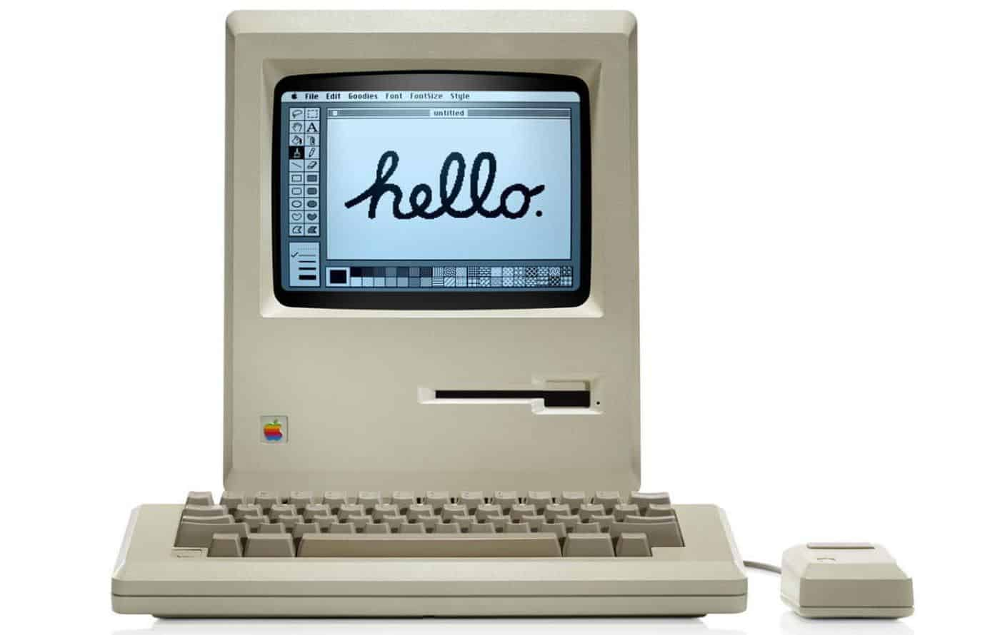
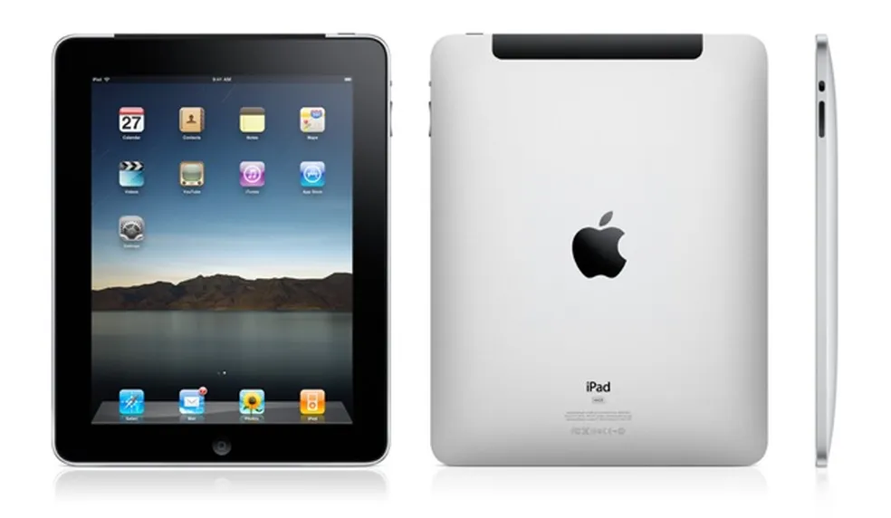
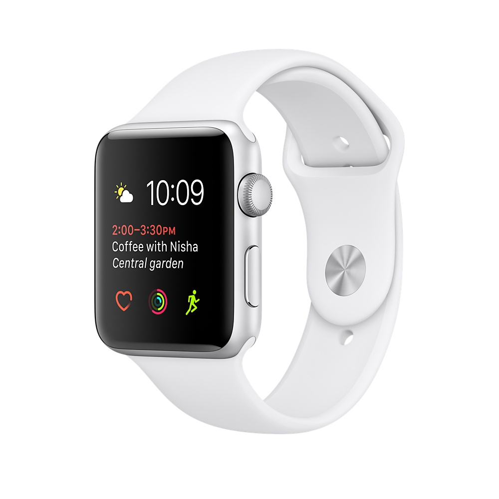
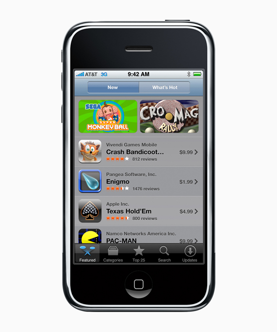
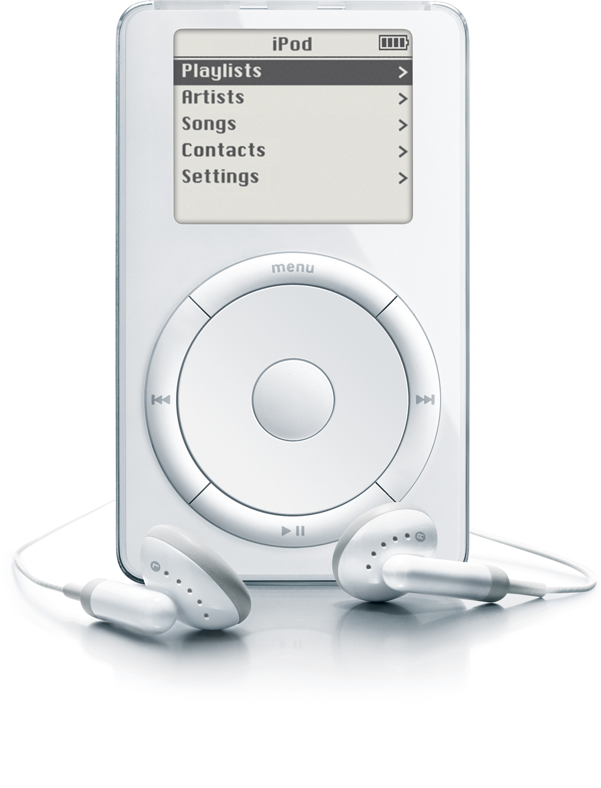
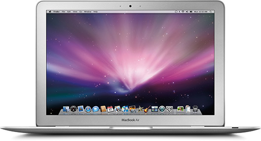
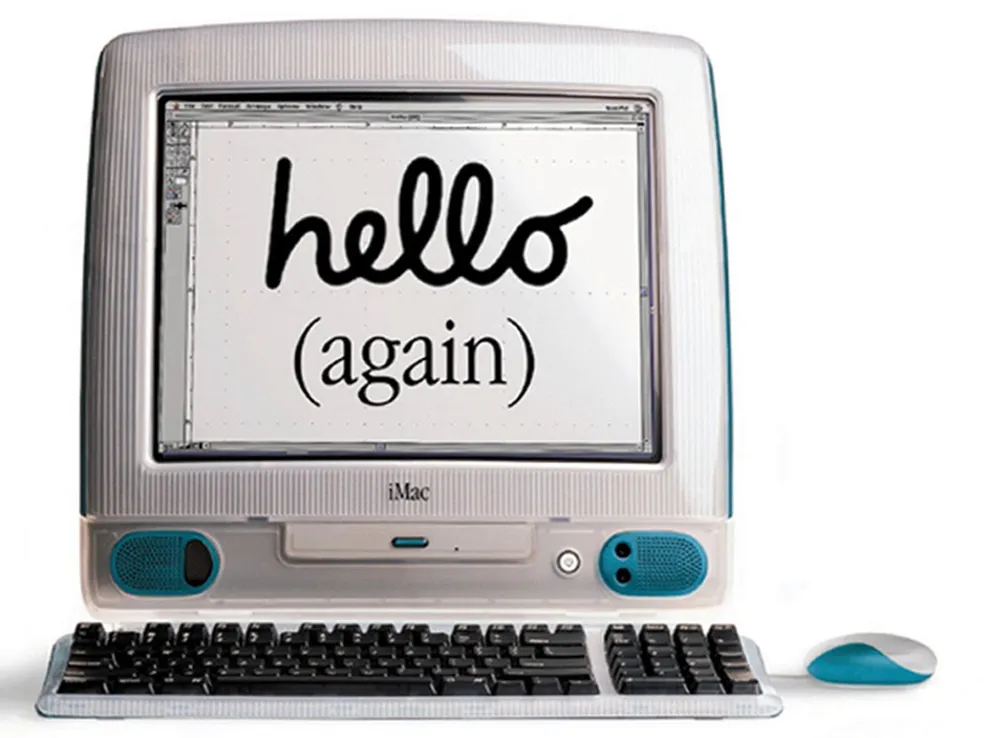
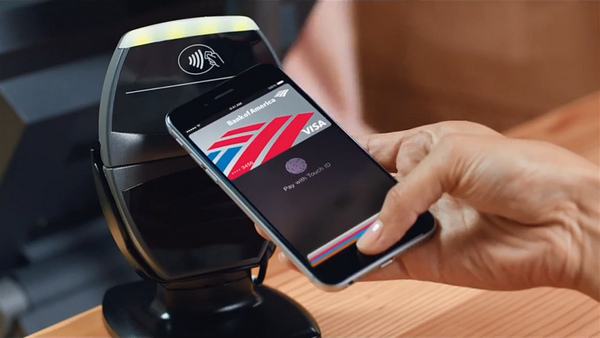

TOP 1
iPhone (2007)

O primeiro iPhone é talvez o lançamento mais icônico da Apple. Ele revolucionou a indústria de smartphones, integrando um touchscreen capacitivo, navegador de internet e aplicativos em um dispositivo compacto. Impacto: Mudou completamente a maneira como as pessoas interagem com tecnologia.
TOP 2
Macintosh (1984)
O lançamento do Macintosh, o primeiro computador pessoal com uma interface gráfica amigável e mouse, marcou o início de uma nova era na computação. Impacto: Tornou o conceito de um "PC" acessível para o público geral.
TOP 3
iPad (2010)
O iPad inaugurou a era dos tablets, criando uma nova categoria de dispositivos. Ele foi pensado para ser um meio termo entre smartphones e laptops. Impacto: Redefiniu a computação portátil, sendo usado tanto em entretenimento quanto em setores profissionais.
TOP 4
Apple Watch (2015)
O Apple Watch trouxe os smartwatches para o mainstream, com foco em monitoramento de saúde e integração com o ecossistema da Apple. Impacto: A Apple se tornou uma líder no setor de wearables.
TOP 5
App Store (2008)
A App Store mudou a maneira como os usuários baixam software. Foi a primeira loja de aplicativos de sucesso, facilitando o acesso a uma grande variedade de apps para os dispositivos Apple. Impacto: Criou um modelo de negócios que é amplamente usado até hoje.
TOP 6
iTunes e iPod (2001)
O iPod, junto com o iTunes, revolucionou a indústria da música. O iTunes permitiu a compra de músicas digitais, enquanto o iPod facilitou o consumo dessas músicas em qualquer lugar. Impacto: Mudou a forma de consumir mídia, diminuindo drasticamente a compra de CDs.
TOP 7
MacBook Air (2008)
O MacBook Air redefiniu o design de laptops com sua leveza e portabilidade, influenciando o mercado de ultrabooks. Impacto: Estabeleceu o padrão para laptops finos e leves.
TOP 8
Apple M1 Chip (2020)

A introdução do chip M1 marcou uma mudança drástica para a Apple, que passou a desenvolver seus próprios processadores para seus computadores. Com performance impressionante e eficiência energética, o M1 se destacou. Impacto: Iniciou uma nova era de inovação na linha de computadores Mac.
TOP 9
iMac G3 (1998)
O iMac G3 foi um sucesso imediato com seu design colorido e chamativo. Também eliminou as portas tradicionais em favor de USB, uma decisão ousada na época. Impacto: Salvou a Apple de uma crise e redefiniu o design de computadores pessoais.
TOP 10
Apple Pay (2014)
Apple Pay simplificou os pagamentos móveis, permitindo que os usuários pagassem por produtos e serviços com seus dispositivos Apple. Impacto: Acelerou a adoção de pagamentos sem contato.